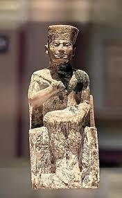
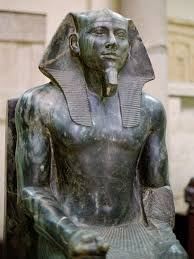
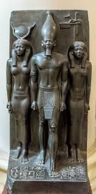

الجيزة
الجيزة تقع غرب القاهرة وتُعرف بأنها موطن الأهرامات وأبو الهول، أعظم رموز الحضارة المصرية القديمة. هي الوجهة الأولى لأي سائح يريد أن يلمس عبق التاريخ الفرعوني.
هرم خوفو
أكبر أهرامات الجيزة، بُني قبل أكثر من 4500 عام كمدفن للملك خوفو. ارتفاعه الأصلي كان حوالي 146 مترًا، وهو أعجوبة هندسية ما زالت تبهر العالم حتى اليوم.
أبو الهول

تمثال ضخم يجمع بين جسد أسد ورأس إنسان، يُعتقد أنه يمثل الملك خفرع. أبو الهول يقف شامخًا منذ آلاف السنين كحارس للأهرامات.
هرم خفرع
الهرم الأوسط في مجموعة الجيزة، يتميز ببقايا كسوة حجرية في قمته، مما يعطيه مظهرًا فريدًا. يُعتبر شاهدًا على قوة الملك خفرع ومكانته في التاريخ المصري القديم.
هرم منقرع
أصغر أهرامات الجيزة، لكنه يتميز بجمال تصميمه ودقة بنائه. هرم منقرع يعكس اهتمام الفراعنة بالفن والرمزية، ويُعتبر جزءًا لا يتجزأ من تجربة زيارة هضبة الجيزة.